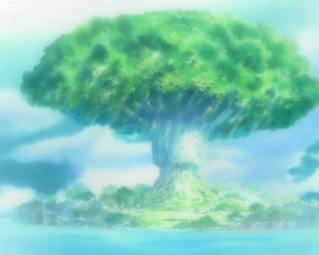

Inicio
Personajes
Historia
Contexto Histórico
Paralelismos con el Mundo Real
One Piece no es solo una aventura; es una crítica a las estructuras de poder. Eiichiro Oda utiliza eventos históricos para construir su universo:

Caza de Humanos y God Valley: En la obra, existen eventos donde las élites mundiales (Tenryubito) organizan "juegos" de cacería humana en islas no afiliadas. Esto guarda un paralelismo escalofriante con la caza de seres humanos en Croacia durante la Segunda Guerra Mundial por parte de los Ustachas, o las persecuciones históricas de regímenes totalitarios donde se deshumaniza a un grupo por diversión o control social.
El Gobierno Mundial y la Censura: Al igual que en muchas dictaduras reales, el Gobierno Mundial de One Piece prohíbe investigar el "Siglo Vacío". Esto se relaciona con la damnatio memoriae (borrado de la memoria) que han aplicado diversos imperios a lo largo de la historia para eliminar vestigios de culturas anteriores.
Discriminación y Esclavitud: La situación de los Hombres-Pez refleja las luchas por los Derechos Civiles y el Apartheid. La serie muestra cómo el prejuicio se hereda y cómo las instituciones pueden ser cómplices de la esclavitud.
Piratería Real: Muchos personajes están basados en piratas reales. Por ejemplo, el nombre de Gol D. Roger proviene del término Jolly Roger (la bandera pirata), y otros como Marshall D. Teach se basan directamente en el pirata Barbanegra (Edward Teach).
Inicio
Personajes
Historia
Contexto Histórico